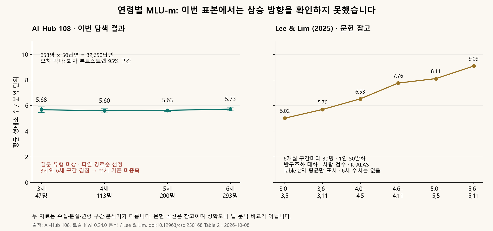

1
배경 · 왜 시작했나
짧게 답했다는 사실만으로 판단해도 될까?
“어디 갈까?”에 “공원”이라고 답하는 것은 자연스럽다. 어떤 질문에 한 말인지 함께 봐야 한다.
앱은 이미 질문 단계를 규칙으로 바꾸고 있다. 발화 지표 작업은 여기에 새 기준을 연결하기 전, 무엇을 세고 무엇을 빼는지부터 정하는 단계다. 선택·확인 질문의 짧은 답이나 카드·오또의 말을 아이의 자유로운 설명과 섞으면 계산의 뜻이 달라진다.
- 말의 길이 · MLU-m
- 형태소 수의 합을 분석 가능한 답변 수로 나눈다. 조사와 어미는 포함하고 문장 부호는 뺀다. 띄어쓰기 단위인 어절 수와는 다르다.
- 낱말 다양성 · NDW
- 명사·동사 등 내용어의 기본형과 품사를 묶어 서로 다른 유형을 센다. 답변이 많으면 값도 늘 수 있어 답변 수와 내용어 토큰 수도 함께 본다.
- 까닭 표현 후보
- “왜냐하면”, “~해서”, “~니까” 같은 형태를 찾는다. 시간 순서를 나타낼 수도 있어 실제 까닭 설명을 했다고 바로 확정하지 않는다.
기본 분석 범위는 아이가 열린 질문에 한 답이다. 질문 유형을 모르면 추측하지 않는다. 표본이 비어 있으면 낮은 점수 대신 “계산할 표본 없음”으로 남긴다.
근거: 측정 계획 · 계산 정의, 기술 어필 계획 §③. 이번 문헌 비교는 Lee & Lim(2025) 원문 Table 2와 방법을 확인했다.
과정 · 기존 기록을 순서대로
먼저 기준을 정하고, 도구를 검사했다
아래 항목은 같은 날 남긴 구현·검증 기록이다. 자동 검사와 명령 실행은 다른 확인 범위이며, 아동 실험 횟수로 세지 않는다.
2
2026-10-08 · 실제 분석기 명령 실행
표본이 적은데 성공했다고 말하지 않는가
무엇을: Kiwi가 실제로 실행되는 명령에 합성 화자 2명 × 각 1답변을 넣었다.
왜: 프로그램이 끝났다는 사실과 연령 타당성을 확인했다는 사실은 구분해야 한다.
결과: insufficient_sample, 즉 표본 부족으로 기록됐다. 이것은 예상한 처리이며 실제 아동 검증 성공이 아니다.
2026-10-08 · AI-Hub 108에 기록된 아이 말 분석
아이 수는 확보했지만, 나이에 따른 차이를 확인하지 못했다
무엇을: 승인받은 라벨 6개 ZIP의 JSON 2,807,994개를 조사하고, 3~6세 화자당 첫 50개 적격 답변을 분석했다.
왜: 앱 질문 규칙에 연결하기 전에 연구 지표가 현재 표본에서 어떻게 나타나는지 확인하기 위해서다.
사전 기준: 3세·6세 각각 10명 이상, 화자당 50답변. 2,000회 화자 재표집(시드 320)의 95% 구간에서 3세 상한이 6세 하한보다 작아야 한다. 질문 유형이 없으면 탐색으로만 보고한다.
결과: 653명·32,650답변. 3세 5.680 [5.458–5.899], 6세 5.729 [5.636–5.823]로 구간이 겹쳤다. 기존 CLI로 동일 입력을 다시 계산한 결과도 일치했다.
사람 분절 일치율은 미측정이다. 질문 정보, 동일 문장 반복, 파일순 표집의 영향을 분리해야 한다. 성공하도록 기준을 낮추거나 앱 문턱을 바꾸지 않았다.
왜 차이가 작았을까? 32,650개 중 27,393개는 다른 답과 글자가 같은 문장이었다. 여러 아이 사이의 중복을 센 값이며, 아이 한 명이 자기 말의 84%를 반복했다는 뜻은 아니다. 어떤 질문을 받고 한 말인지도 알 수 없다.
그림 이름 대기·문장 따라 말하기처럼 답 길이가 제한되는 과제가 섞이면 나이 차이가 작아질 수 있다. 파일 이름 순서로 처음 50개를 고른 영향도 후보이다. 자료가 잘못됐다는 뜻도, 아이들의 언어가 나이에 따라 발달하지 않는다는 뜻도 아니다. 원인별 영향은 아직 분리해 측정하지 않았다.
참고 — 현재 표본의 앱 적용 보류결과 · 어디까지 확인했나
도구 검사는 통과, 실제 전사의 연령 구간은 겹침
서로 다른 평가를 같은 성적 그래프로 묶지 않았다. 완료 여부와 그 결과가 말해 주는 범위를 함께 적었다.

확인 범위별 결과
| 확인한 것 | 기록 | 이 결과의 범위 |
|---|---|---|
| 계산·측정 자동 검사 | 25개 통과 | 고정 예제와 합성 표본의 계산·제외·집계 동작 |
| 기존 평가 검사 포함 | 51개 통과 | 위 25개 포함. 서로 독립된 아동 평가 두 번이 아님 |
| 합성 입력 CLI | 표본 부족 | 2명, 각 1답변을 성공으로 처리하지 않음 |
| AI-Hub 연령별 탐색 | 기준 미충족 | 653명 · 3세 5.68 / 6세 5.73 · 95% 구간 겹침. 질문 종류 미상 |
| 분석기와 사람의 분절 일치 | 미실시 | 로컬 검수표 50개 준비. 사람이 아직 작성하지 않음 |
| 마침표 추가 진단 · 10-12 | 분절 변화 1개 | 실제 전사문 50개 중 1개에서 형태소 수 6→7. 정확도 98%라는 뜻은 아님 |
| 쌓인 기록을 다음 질문에 연결 | #409 병합 대기 | 기존 질문 규칙 연결·자동 검사 완료. 실제 아동 효과와 질문 전후 성과는 미측정 |
| 실제 아동 효과 · S7 성능 | 미실시 | 계산기 통과로 대신할 수 없음 |
표 출처: #320 기존 검증 기록 · AI-Hub 108 탐색 기록.
결론 · 현재와 다음 단계
연령 기준 검증과 앱 구현의 상태를 나눠 보고한다
현재 채택한 것: 로컬 계산 도구와 질문별 기록 기반.
현재 AI-Hub 자료에서 연령별 문턱을 정하는 것은 보류했다. #407·#409는 기존 질문 규칙과 실제 답 기록을 연결하는 구현이며, 검증되지 않은 연령별 점수를 붙이지 않는다.
실제 아이에게 질문이 더 적절해졌는지와 오또 사용으로 말이 늘었는지는 별도 평가가 필요하다.
다음에 할 일 — 정해 둔 순서
규칙 결정: 세션을 넘는 기기 내 기록은 #343에서 10-09 확정됐고 #391에 구현됐다. 또래 기준 비교는 #343의 10-12 조장 결정으로 첫 버전에 포함한다. 단위·과제·표본 조건이 맞아야 하며, 답 50개만 쌓였다고 비교가 가능해지는 것은 아니다.
다음 단계의 숫자는 사전에 정한 측정 조건이며 달성 결과가 아니다. 기준을 먼저 남긴 #320 댓글.
10-09 · 질문 유형·출처별 기록 기반
배경
#343의 10-09 확정 결정에 따라 열린·까닭 질문 답과 선택 답을 섞지 않고, 같은 아이의 기록을 책 사이에서 유지할 준비가 필요했다.
과정
질문 원문·문구 기반 유형·답 원문·출처를 기기에 보관한다. 뒤로/앞으로의 대화 복원, 같은 책 중복 저장 방지, 호칭 변경 시 아이 확인과 명시적 기록 리셋을 연결했다. 사람 분절 50개 검수는 민우님이 직접 맡으며 정답을 AI가 채우지 않는다.
결과
기록·출처·복원·아이 구분·리셋·탈퇴 삭제·세 모드 책 삭제 관련 자동 검사 35개 통과. 사다리 목록과 그림카드 음성 선택도 선택 답으로 기록하고, 읽을 수 없는 누적 자료는 자동으로 덮어쓰지 않는다. 부모 설정의 정상·읽기 실패 화면을 확인했다. 최종 앱 코드 505eba11의 전체 Android 검사는 1,261개 중 1,259개 통과·실패 0·기존 조건부 건너뜀 2개이며 APK 빌드도 성공했다. 서버 전체는 275개 통과, PR의 Android 분할 검사와 backend CI도 통과했다. 관련 검사 35개는 전체에 포함된다.
결론
10-09 구현 범위는 기록 기반이다. 당시에는 Kiwi 런타임·또래 비교·질문 수준 이월을 넣지 않았다. 이후 관찰 요약·질문 연결 상태는 아래 10-12 기록을 따른다. 공백 낱말 수를 형태소 수로 바꾸어 부르지 않는다.
구현 범위·후속 검증 · 검사 기록 · #343 결정
후속 결정: 아래 단계 유지 검사는 당시 제안 기록이다. 조장 18:38 결정 반영 후에는 카드 두 번마다 질문을 한 단계 쉽게 바꾸며 언어 지표에는 넣지 않는다. 새 검사 37개 통과·APK 빌드 성공. 실패 재현·수정·검증 근거. 과거 카드 기록은 다음 동화의 시작 단계를 낮추는 근거로 이월하지 않는다.
10-12 · 카드만 고르는 경우와 main 통합 재검사
배경·사전 기준: #409 리뷰에서 카드만 응답할 때 질문 단계가 어떻게 되는지 명시하도록 요청받았다. 현재 제안의 세 시작 단계 각각에서 카드 네 번 뒤에도 단계 유지·연속 횟수 초기화·차례 증가·템플릿 확정을 확인한다. 하향 정책은 조장 결정 대기다.
과정·결과: main의 끝맺기 되돌리기와 맞춤 질문의 신호 되돌리기를 함께 보존했다. 병합 직후와 카드 검사 보강 후 각각 관련 앱 검사 35개 통과. 계산·집계 검사 25개 통과. 서로 다른 아동 표본 수나 전체 검사 통과를 뜻하지 않는다.
판정: 현재 동작 명시·통합 검증에 채택한다. 형태소 어미 표기 차이만으로 계산 오류라고 단정하지 않는다. 사람 정답 일치율·연령 타당성·아동 사용 효과는 별도 검증으로 남긴다.
10-13 상태 보충: 아래는 10-12 작업 중 기록이다. #407과 #409는 모두 main에 병합됐다. #434·#437은 10-13 조회 시 기존 코드 head의 backend·Android CI가 통과한 상태로 리뷰·병합 대기다.
10-12 · 기록을 보여 주고, 다음 질문에 연결
main에 있는 것: #391의 질문·답·출처·아이별 기록과 #407의 책별·현재 아이 말 기록 요약. 병합 대기: #409는 기록된 신호로 다음 새 동화의 시작 질문 방식을 정한다. 앞선 head의 backend·Android CI는 통과했으며, main 통합과 카드 검사 보강 후 head의 전체 CI는 별도로 확인한다.
#407이 보여 주는 길이는 공백 기준 낱말 수이며, 이 페이지 위쪽의 Kiwi 형태소 수와 다르다. 열린·까닭 질문의 직접 답만 세고, 고르기 답은 고른 표현의 횟수로 따로 보여 준다.
#409는 실제 판정 신호와 연결 표현을 기존 질문 규칙에 넣는다. 확인·선택·어른·마스코트·미상 답으로 언어 수준을 판단하지 않는다. 과거 원문은 서버에 보내지 않으며, 아이가 바뀌면 기록이 섞이지 않게 한다. 새 연령별 문턱이나 추가 유료 호출은 없다.
발표 전 남은 확인: 조장 리뷰·병합 후 실제 기기에서 기록·새 이야기 시작·다른 아이 전환을 확인한다. 사람 분절 정답 비교는 별도이며, 실제 아동에 대한 질문 적절성과 발화 증가 효과는 구현·CI 통과로 대신할 수 없다.
10-12 상태·검증 범위 · #407 · #409
계산기는 실제 아이 말을 정확히 나누나?
기존 검사 25개는 다시 통과했고, 전사문 50개의 자동 결과도 재현됐다. 하지만 문장 끝에 마침표를 붙이자 1개에서 어미가 다르게 나뉘어 형태소 수가 6개에서 7개로 바뀌었다. 반복 실행 결과가 같다는 것과 정답이라는 것은 다르다. 사람 정답 비교가 남아 있다.
기존 자동 분절표를 보고 그대로 승인한 것은 독립적인 사람 정답이 아니다. 익숙한 검수자가 기준에 맞춰 직접 나누거나, 자동 결과를 참고했다면 그 사실을 기록해야 한다. 원문은 외부로 올리지 않는다.
10-13 · 50개 검토 완료, 보류 원인 확인
배경·기준: AI 제안과 설명을 본 사용자의 판단을 확정해 확인했다. 모든 50개를 유지하고 보류를 AI가 동의로 바꾸지 않는다. 목적은 오류 후보 분류이며 독립 정확도 계산이 아니다.
결과: 동의 45개 · 보류 5개 · 미검토 0개. 보류는 복합 단어 분절 3개, 반복·말 고침 1개, 해석하기 어려운 전사 1개다. 원본 파일 3개의 검사 전후 해시가 같았다.
설정 대조: 같은 답변 50개에서 기본 설정은 평균 5.40토큰, 이형태 표시만 바꿔도 5.40이었다. 세부 분절을 켜면 36개의 개수가 바뀌어 평균 6.26이 됐다. 이는 단위 변화이며 정확도 개선이나 아이 말의 증가가 아니다.
판정: 사용자 검토와 보류 사유 분석은 완료했다. 45/50을 정확도 90%로 쓰지 않는다. 앱 말 기록·맞춤 질문은 병합됐고, 독립 아동 정답 및 실제 사용 효과는 별도 근거가 필요하다.